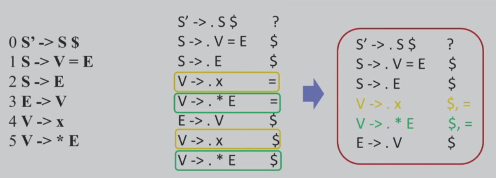
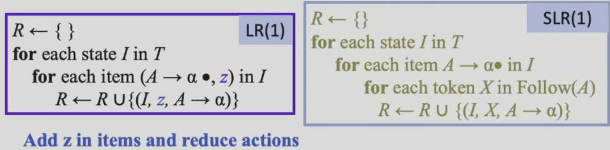

3 Parsing 语法分析¶
目前笔记还是跟yps老师（他的ppt做得真好啊讲课也好人还那么可爱aaaa（他应该不会看到吧x）课程记的流水账，可能不太完善；期中考前会（尽量）理一份思路清晰的框架出来
3.1 语法分析概述¶
语法分析的任务就是分析由词法分析后生成的token序列是否符合语法，如果符合，则生成语法树（通常是抽象语法树AST）

3.1.1 上下文无关文法¶
3.1.1.1 CFG¶
定义可以看这里。
在实际代码中EOF的处理：

-
$作为输入的结束符号，表示输入流已经结束。 -
为了明确
$必须在完整的S短语之后出现，定义了一个新的起始符号S'并引入产生式S' → S$。 - 该文法用于解析数学表达式，确保优先级正确：
- 乘除 (
*、/) 优先级高于加减 (+、-)，因为T层次低于E。 - 括号
(E)可用于改变计算顺序。
- 乘除 (
S -> E$确保解析完整表达式后，输入流必须结束 ($)。
一个有意思的东西（不考，我似懂非懂的）：

3.1.1.2 推导和归约¶

最左推导：每步代换最左边的非终结符

相对应的最右规约是自底向上的优先把最右边终结符变成非终结符的过程
最右推导：每步代换最右边的非终结符

推导是生成语言的角度；归约是识别语言的角度。
3.1.1.3 CFG的Parse Tree¶
推导过程的图形化表示。

对编译器来说，CFG的搜索\(O(N^3)\)已经很复杂了，我们利用CFG的子集去简化复杂度（降为线性）。
3.1.2 设计编程语言的文法¶

消除二义性：“给定CFG是否无二义性”是不可判定问题
常用技术为分层：

不存在通用算法，但是有很多经验解决这个问题。
3.2 递归下降分析¶
3.2.1 概述¶
语法分析的方法分两类：
-
自顶向下Top-down：从分析树根部开始，尝试推导(derive)出输入串
-
非终结符的替换：不确定性会带来算法复杂度问题，因此规定每次都替换最左边的非终结符
-
产生式的选择：按顺序选择，如果过程中检测到不正确，可能需要回溯，但是回溯的代价太高了，类似于NFA，我们想找到类似DFA的文法
-
通过lookahead的方式去自顶向下生成：

-
回溯举例 - 核心思路是对不上目标式就回溯：
-
-
自底向上Bottom-up：从分析树叶子开始，尝试归约(reduce)到文法的开始符号S
3.2.2 LL(1)和预测分析法¶
3.2.2.1 LL(1)文法¶
- L：从左到右扫描
- L：最左推导
- k：向前看k个token来确定产生式（通常k=1）
- 每次为最左边的非终结符号选择产生式时，向前看1个输入符号，预测要用的产生式
3.2.2.2 First集和Follow集¶
3.2.2.2.1 定义¶
First集

Follow集

Nullable
定义：X is Nullable iff X 可以derive一个空串 iff：
- Base case：\(x \to \epsilon\)
- Inductive case：\(X \to Y_1...Y_n\)，if \(Y_1...Y_n\)是n个非终结符且都可以生成空串
3.2.2.2.2 算法¶
-
nullable（根据递归生成过程寻找Nullable集）：
 nullable集合只增不减，全集有限，所以算法收敛（下面两个算法也同理，算法结束条件都是各集合不能再增长）。
nullable集合只增不减，全集有限，所以算法收敛（下面两个算法也同理，算法结束条件都是各集合不能再增长）。 -
first：

-
follow：
-
follow集一些简单的推论：

-
例子：
- first就是把每一个规则对应到first生成的几个case：

- follow的计算我们要充分利用、划分不同的情况，避免遗漏：

- first就是把每一个规则对应到first生成的几个case：
- 虎书中的优化算法（三个集合同时计算且加速收敛）：

3.2.2.3 LL(1)文法定义¶
以下条件可以保证产生式的唯一性：

3.2.2.4 实现LL(1)预测分析¶
构造预测分析表
表格定义：

选择方式遵从以下规则：
以上面做好了first和follow集的规则集合为例：
由于LL(1)文法可以保证规则选择的唯一性，所以一个格子内不可能有两个规则，所以上面的文法不是LL(1)文法。
3.2.2.5 递归下降预测分析¶
- 分析程序由一组过程组成
- 每个非终结符号对应一个过程
- 可以通过向前看一个输入符号来唯一选择产生式

起点都是terminal，可能不需要预测分析表（first、follow集合）；但如果起点是non-terminal，则需要预测分析表辅助决策：

过程/函数的调用树就类似于语法树。
非递归实现（不要求掌握）¶
使用显式的栈，而不是递归调用来完成分析，整体过程类似于PDA

感觉就是PDA的生成过程，还挺直观的
例子：

3.2.3 文法改造¶
3.2.3.1 提左公因子¶
基于上述分析，我们可以得出LL(1)文法一些明显的性质：
- 无二义
- 无左公因子：如果同一非终结符的多个候选式存在共同前缀，可能导致回溯，我们可以考虑限制文法或进行文法变换
- 无左递归
3.2.3.2 消除左递归¶
这可能导致递归下降分析无限循环：
解决方式：把左递归转换成右递归

3.2.4 错误恢复¶

一般情况下我们追求能够打印错误并且自行进行错误恢复的错误处理

3.3 自底向上分析¶
LL(1)分析：
- 优点：直观、符号文法结构；手动构造or自动生成都支持
- 缺点：能分析的文法类型受限；即使消除左递归、提取左公因子之后，表达力仍然有限
所以我们现在更多使用自底向上分析。

3.3.1 Shift-Reduce 移进-规约分析法¶
自底向上是从串\(w\)规约为文法开始符号\(S\)
规约的过程：与某产生式右部相匹配的特定子串，被替换为该产生式头部的非终结符
例子：
从结果往回看，我们发现这是最右推导的逆过程：

因为最右推导的每一个中间状态（合法的每一步）都是有规律可循的，限制了规约方式。
具体实现就是基于栈的移进-规约
核心问题就是什么时候shift什么时候reduce
3.3.2 LR(0)分析¶
文法的表达能力：

算法更高级，支持的input就更灵活。但是太灵活之后状态表可能会爆炸。
3.3.2.1 LR(0) Parsing NFA¶
1 状态构造
我们需要解决的关键问题是如何知道栈顶内容可以规约，这个时候我们就要维护一个状态（在这里我们称为项），记录当前识别的进度：
而我们知道文法产生式和每个产生式右部的长度都是有限的，所以状态数量也是有限的，完成这个任务的自动机被称为LR(0)自动机，而这个自动机不是用来直接识别语言的，而是记录当前识别进度的。
例子：

2 起始/终止状态
- 起始状态为\(S'\to·S\$\)
- 终止状态为\(S'\to S·\$\)
3 状态迁移
状态迁移的两种情况：
- 第一种是消耗non-terminal的
- 第二种是不消耗non-terminal的，相当于NFA里面的\(\epsilon\)转换
4 NFA转DFA
就是传统的转换过程：子集构造法
3、4步骤的例子：
- NFA构造：我们先根据所有规则写出\(\epsilon\)转换，再读一个simbol，再重复上述步骤，直到到达终止态
3.3.2.2 LR(0) Parsing DFA¶
那我们可不可以跳过NFA直接构造DFA呢？
1 --- 单个状态：项集闭包
- 这就相当于我们直接去构造项集闭包 - 递归地加入闭包内产生式右边第一个非终结符的产生式，和NFA转DFA的\(\epsilon\) - closure很像。
- 两个循环，先遍历闭包中每一个item，再遍历每一个以item的·后面的symbol为起始项的转换关系；直至不再增长（不动点思想）。

2 --- 转移函数
相应地，状态转换函数：

goto函数最开始是空集，对于闭包里面每一个项，如果·后面是X，则将其加入goto的结果，并且计算其closure。
3 --- 整体算法
整体的DFA构造方法：

对每一个状态里面的每一项计算goto的结果并加入DFA直至不再增长。
例子：

3.3.2.3 LR(0) parsing分析表¶
从DFA构造语法分析表，使用语法分析表指导parsing
- 使用
Action和GOTO表项指导Shift、Reduce、Error、Accept四个操作
以状态为行，以Action的终结符和GOTO的非终结符为列，表项内容为操作：
Action表项：- shift+goto下一状态：例如
s2就是shift并且去到第二个状态 - 当状态i存在以·为结尾的项时（有一个项满足就整体都选择规约），选择index为k的产生式进行reduce
- shift+goto下一状态：例如
GOTO表项：- 列是每次规约所用产生式左边的nonterminal
A，表示每次规约之后去到的下一个状态是什么
- 列是每次规约所用产生式左边的nonterminal
3.3.2.4 LR(0) Parsing过程¶
1 --- 符号栈变化
- Shift - push下一个输入的终结符
- Reduce -

- Error
- Accept - shift $ 并且可以把栈里面的剩余元素规约成起始符号
2 --- 状态栈变化
- Shift(n) - 移进一个token；把新状态n压入栈
- Accept - 停止分析，输出成功
- Error - 停止分析，输出错误
整体流程：

3 --- 例子
- shift：
- reduce：
- 完整的分析：

几个问题：
- 为什么没有look ahead： LR(0)中所有的reduce操作实际上是与状态绑定的， 而不是与(状态, 输入) 对绑定的。因此我们在读取当前符号之前，就知道应该reduce 还是shift了。而如果是shift，则可认为是读入当前符号以后再做判断，也就是说从理论上讲我们没有(或者说不必)做任何look-ahead。
- 局限性：没有足够的上下文来做出更正确(或者说更”聪明”)的决定，遇到\(X \to \alpha·\)的情况只会无脑根据当前状态规约，会出现shift和reduce冲突、选择什么规则reduce冲突的可能性。后面三者都是为了缓解冲突。
在这里yps老师说写了一个动态demo，还没完结，等完结了放个链接上来。
3.3.3 SLR(1)分析¶
没有出现(1)就是默认(1)
- 利用更多信息来指导规约操作
- LR分析是最右推导的逆过程，由此，每步规约满足\(t\in \text{Follow}(E)\)
- \(t\)是next token
- \(E\)是用来规约的产生式左部
以下图为例，\(+\)和\()\)都\(\in \text{Follow}(E)\)

使用这个约束减少冲突，限制非法规约的可能。
例如，在LR(0)分析中，我们根据顶部状态唯一确定规约动作（顶部状态为3的时候不管next token是什么都无脑规约），而在SLR(1)分析中，因为只有\(\$\)在E的follow集合内，所以只有\(T[3,\$] = r2\)是合法的：

因此，在具体实现上，SLR和LR(0)唯一的区别就在规约条件中增加了next token是否在产生式左边的follow集合内的判断：

当然，这个方法使用follow集解决冲突（必要但不充分），虽然有效但还是不够精确，进行归约的条件更加严格才能进一步降低冲突的可能。

3.3.4 LR(1)分析¶
基本思想：”分裂“一些LR(0)的状态，精确指明何时应该规约。
因此，我们定义LR(1)的项为\(A \to \alpha·\beta, a\)，其中\(a\)是lookahead的next token。
项的改变带来了很多内容（闭包、规约等）的变化：
3.3.4.1 Closure¶
理解方式：
个人理解是在处理\(\epsilon\)-transition的时候，我们针对·后面那个non-terminal\(X\)进行转换的时候添加了这个规约完成过程中的next token必须包括在\(X\)之后的string的first集合里面这一限制条件。
那个derivable from还是没理解，现在只会当一个无情的做题机器（可能孰能生巧做点题目就get了吧
一个闭包的计算例子：

有些项比较相似，可以有更compact的等价表示。
3.3.4.2 GOTO¶
基本相同，只换了item的表示。
3.3.4.3 Reduce Action¶

因为LR(1)显式地说明了first集合的关系和next token，所以在规约填表的时候不需要额外计算follow：
- 如果要根据\(A \to \alpha \beta ·, a\)规约，下一个输入符号必须是\(a\)
LR(0)、SLR(1)、LR(1)不同之处在于：自动机相同，表格不同
而LR(1)的缺点是next token要遍历所有终结符，表格的项数（状态数量）可能会爆炸
3.3.5 LALR分析¶
介于LR(1)和SLR(1)之间，表达能力足够强，状态数量足够小
核心思想：合并LR(1)中只有lookahead symbols不同的状态。
core - 状态中去掉lookahead的部分
合并流程：core保留，lookahead取并集
注意点：node改变之后edge也需要改变
例子：

虽然表项减少了，但是其表达力确实是LR(1)的子集。
3.3 语法分析器¶
Yacc是语法分析器的生成器：
Lex和Yacc的联系：把词法分析器的函数暴露给parser使用
考试考点：Yacc的使用、语义动作
解决冲突与二义性的方式：
- 二义性：手动为算符指定优先级和结合律
- 冲突解决：
- 规约/规约冲突 - 选择Yacc说明中先出现的产生式
- 移进/规约冲突 - 移进优先
3.4 总结¶
yps: 熟练度很重要！
四个最右推导文法对比：
yps：还是要好好做题